1先听：混叠不是「变闷」，是「变假」
下面 7 段音频都是 44.1 kHz 播放，唯一的变量是「采样前有没有抗混叠低通」。 每张卡片上面的白线是波形，下面是时频谱（横轴时间、纵轴频率、亮度=能量）。 时频谱里能直接看到：一个单纯的「上行滑音」是怎么被折成「上行再倒回来」的。
A 组：扫频（把「频率轴被折叠」听成一条滑音）
200 Hz → 7.6 kHz，6 秒
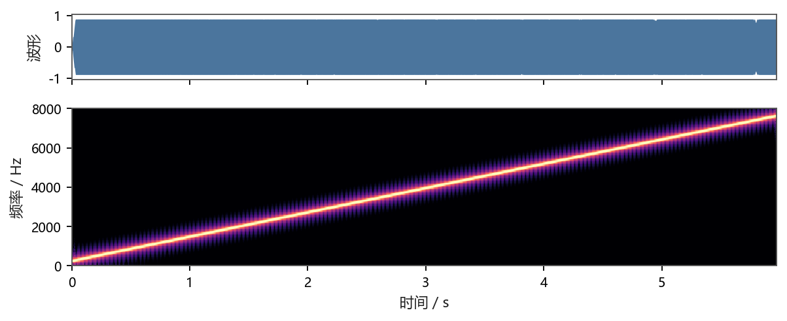
44.1 kHz 直接合成。听到的是一条一路向上的警笛声，时频谱上是笔直的斜线。
同一个扫频，过 4 kHz 后音高「掉头」
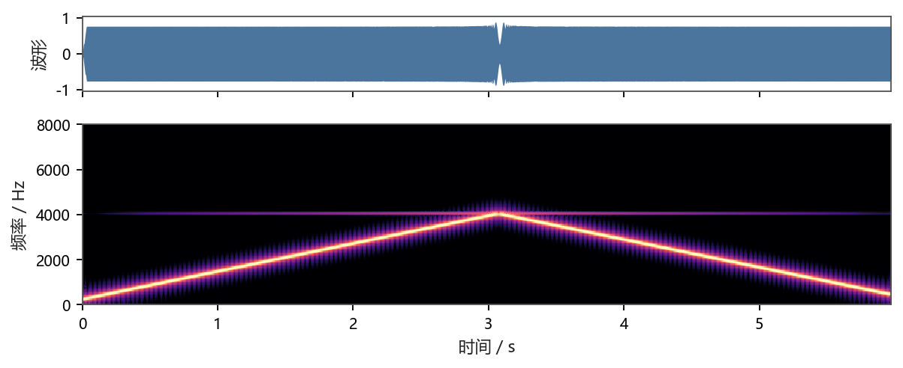
注意 3 秒处：声音升到 4 kHz 后突然往下滑。信号并没有降调，是 4 kHz 以上的成分被折到了 4 kHz 以下（8 kHz − f）。时频谱里的黄色虚线就是这条「镜像线」。
正规 ADC：3.4 kHz 以上被掐死
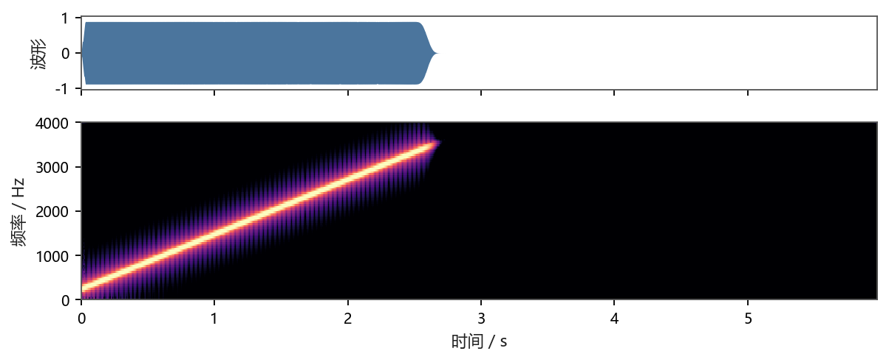
声音升到 3.3 kHz 左右就「断了」，之后一片安静——没有掉头。代价是高频没了，但换来的是：没混叠。这就是为什么抗混叠滤波器必须放在 ADC 前面。
6 kHz 采样后听起来像 2 kHz
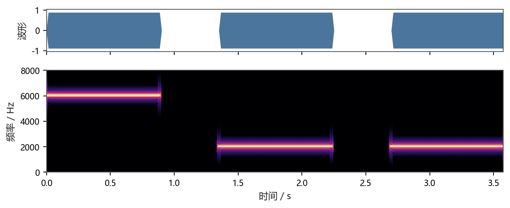
三段各 0.9 秒：① 真的 6 kHz ② 6 kHz 过 8 kHz 采样 ③ 真的 2 kHz。②和③在耳朵里一模一样，因为 8000 − 6000 = 2000。采样之后，你听到的频率可以是假的。
C 组：同一段旋律，采样率越低越「电音」
小星星，听起来是「乐器」
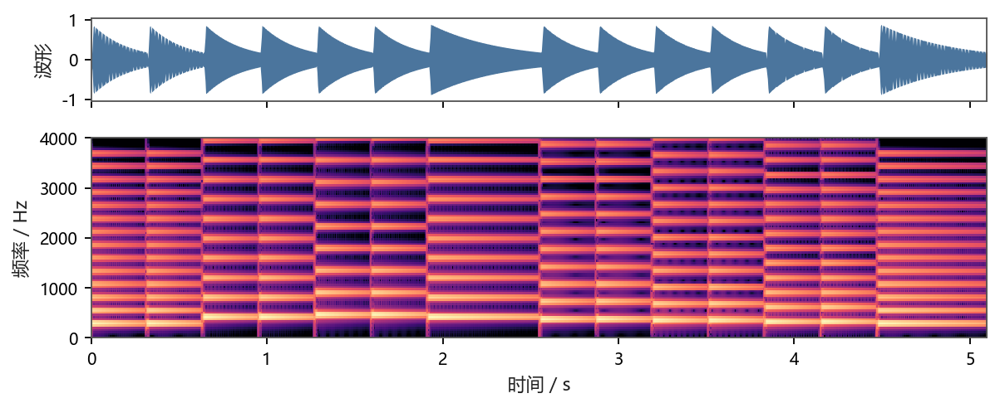
每个音的谐波都严格成整数倍（262, 524, 786, …），所以耳朵判它是一个音。
轻电音：金属感、合唱感
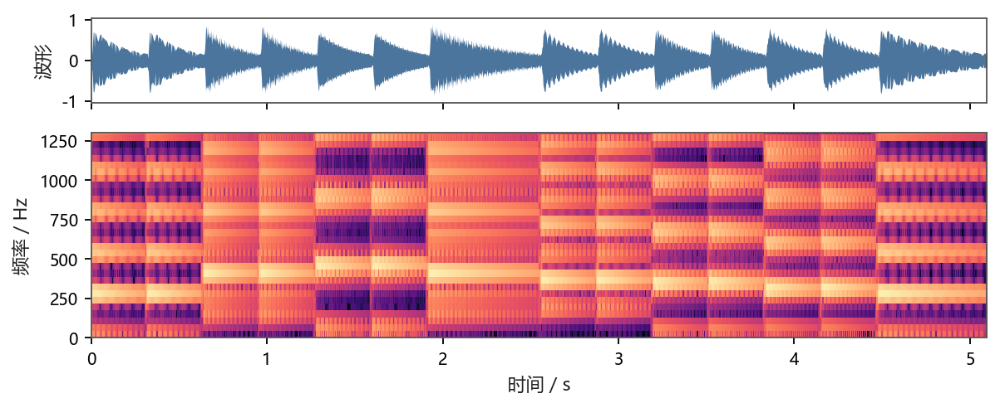
1.3 kHz 以上的谐波全折叠。5 次谐波 1308 Hz 折到 1292 Hz，与原位置只差 16 Hz → 一个缓慢的拍频颤音；更高次谐波直接插到谐波之间，变成噪音性的金属感。
重电音：8-bit 破碎感
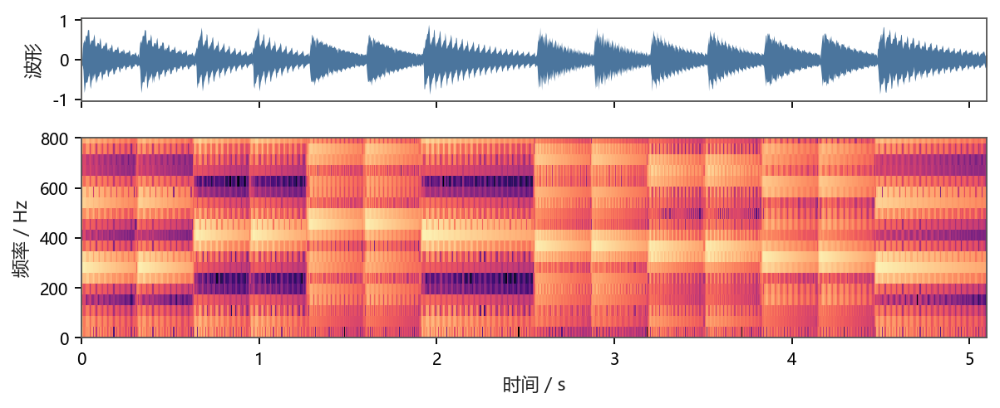
Nyquist 只剩 800 Hz，连 3 次谐波（786 Hz）都保不住。你听到的低频全是折回来的假分音——这就是老游戏机 / 对讲机那种「电音」。
听不出来？ 戴耳机、把音量调到能听清 A1 的程度，先听 A1 再听 A2，盯住第 3 秒。
C 组建议先听 C1，再听 C2 —— 同一条旋律，区别只在「采样率」。
这些 wav 的生成方式是「理想采样 + FFT 带限重建」，等价于「没有抗混叠滤波的 ADC + 理想 DAC」，所以听到的就是混叠本身，没有额外的采样保持镜像。脚本见 py/make_audio.py。
2再拖：一个极点被四种方法搬到哪
左图是 s 平面：横轴 $\sigma$（衰减/增长），纵轴 $j\omega$（模拟频率）。 左边的绿星可以拖，也可以直接点一下换个位置。 右图是 z 平面：绿点是模拟稳定区（$\sigma<0$）被搬过去的样子，红点是模拟不稳定区。 判据只有一句：绿点跑到单位圆外 = 模拟稳定、数字不稳定。
s 平面（模拟域）· 拖这颗星
z 平面（数字域）· 四种映射的落点
| 方法 | 映射式 | 极点落到 | |z| 与判定 |
|---|
3调一下：预扭曲到底把什么钉回去了
这是一个 4 阶 Butterworth 低通经双线性变换后的幅频响应。 拖动 $\Omega_p$（数字截止频率）、改阶数 $n$，看曲线怎么动。 然后取消勾选「预扭曲」：这相当于设计时忘了 $\omega=\frac{2}{T}\tan\frac{\Omega}{2}$， 直接把数字指标当模拟指标用 —— 截止频率立刻跑偏，越靠近 $\pi$ 跑得越狠。
4六张图，把「为什么是双线性」钉死
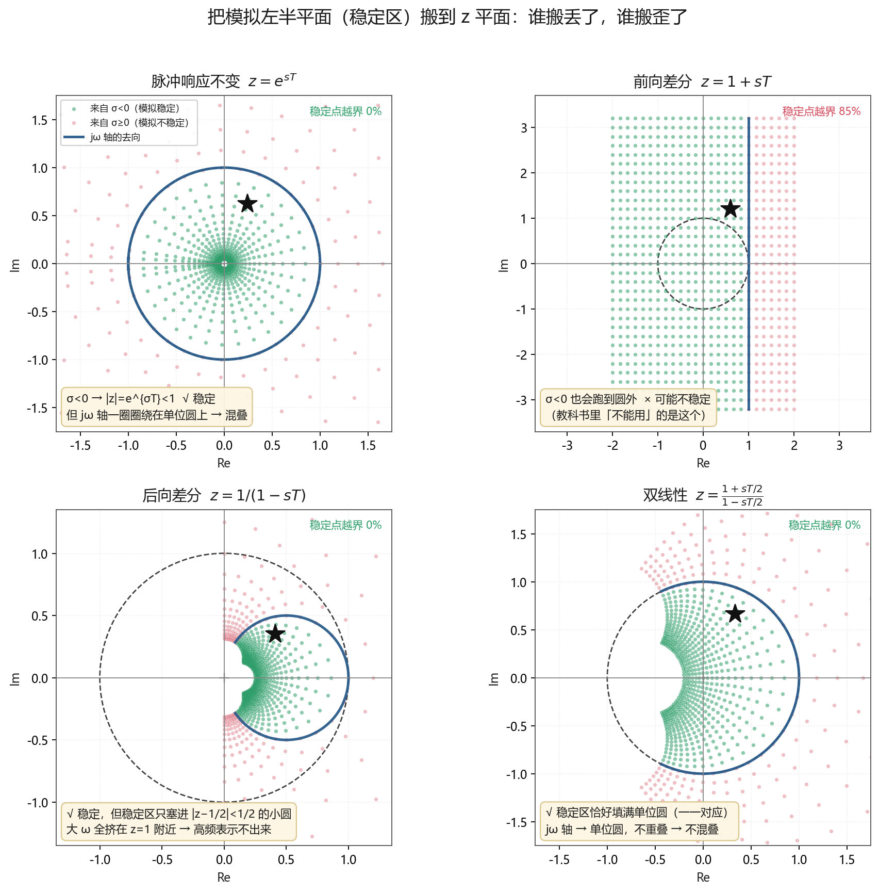
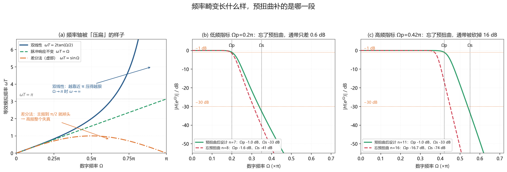
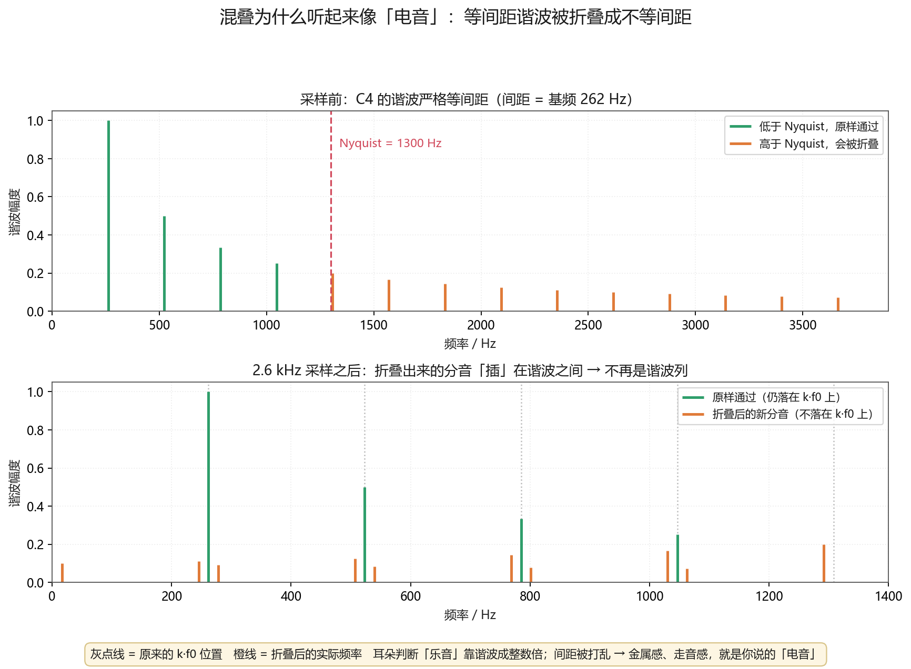
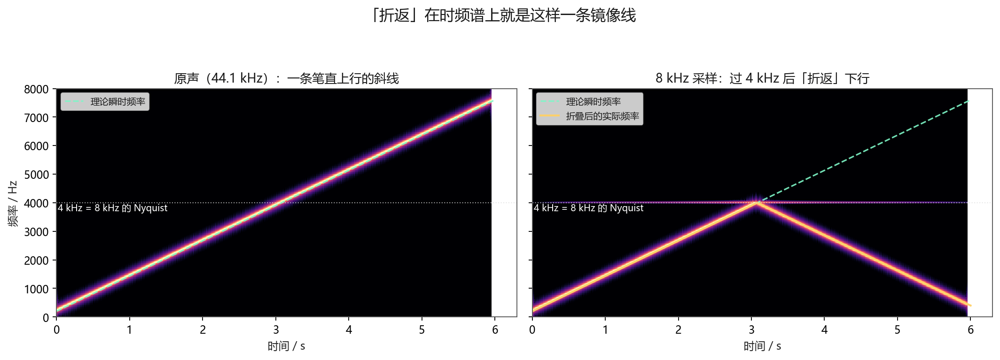
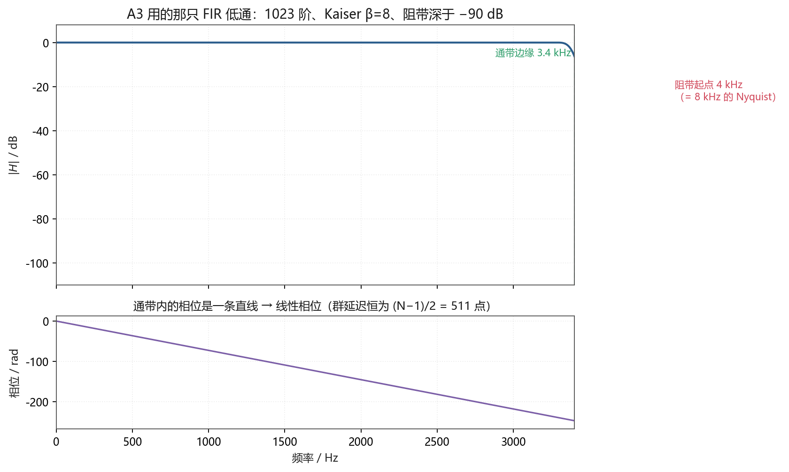
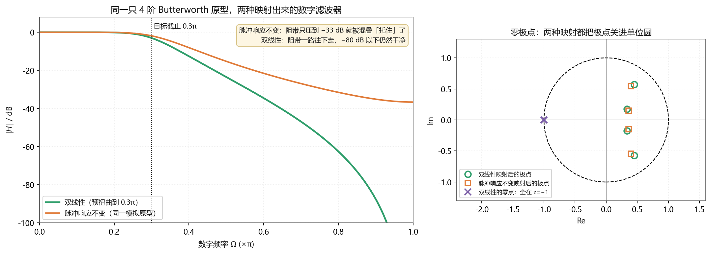
5结论：为什么非得「绕个弯」
因为别的映射要么混叠（脉冲响应不变：高频折回来）、要么不稳定（前向差分：极点跑出单位圆）、要么把高频挤死（后向差分：整条 $j\omega$ 轴只剩一个小圆）。 双线性的代价只是「频率轴被拉伸」，而拉伸是可以提前用预扭曲补掉的；混叠和不稳定补不掉。
- 预扭曲：把数字指标 $\Omega_p,\Omega_s$ 换成模拟指标 $\omega=\frac{2}{T}\tan\frac{\Omega}{2}$。
- 求阶数：用换算后的 $\omega_s/\omega_p$ 套公式，得到 $n$ 和 $\omega_c$。
- 反归一化：把归一化原型的 $s/\omega_c$ 换成 $s$，得 $H_a(s)$。
- 双线性代入：$s=\frac{2}{T}\frac{z-1}{z+1}$，整理成 $z^{-1}$ 的多项式，得 $H(z)$。
- 验算：代 $z=1$（$\Omega=0$）看直流增益，代 $z=-1$（$\Omega=\pi$）看高频衰减，再核对 $\Omega_s$ 处是否够 $A_s$。
· 前向差分 $s=\frac{z-1}{T}$：左半平面被搬到 $|z-1|<1$ 的圆盘，有一部分在单位圆外 → 可能不稳定（图 1 右上，绿点 85% 越界）。
· 后向差分 $s=\frac{1-z^{-1}}{T}$：左半平面被搬到 $|z-\tfrac12|<\tfrac12$，严格在单位圆内 → 一定稳定（图 1 左下）。 它的毛病不是不稳定，而是把高频挤没了：$j\omega$ 轴被压成半径 $\tfrac12$ 的小圆，$\Omega$ 靠近 $\pi$ 的地方根本没有对应的模拟频率。
考试写「前向差分不稳定、后向差分稳定但频率畸变严重」才是稳的。